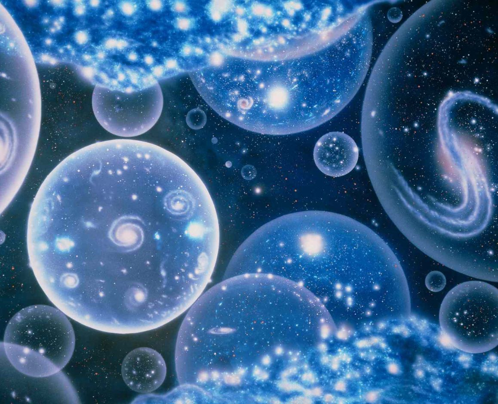
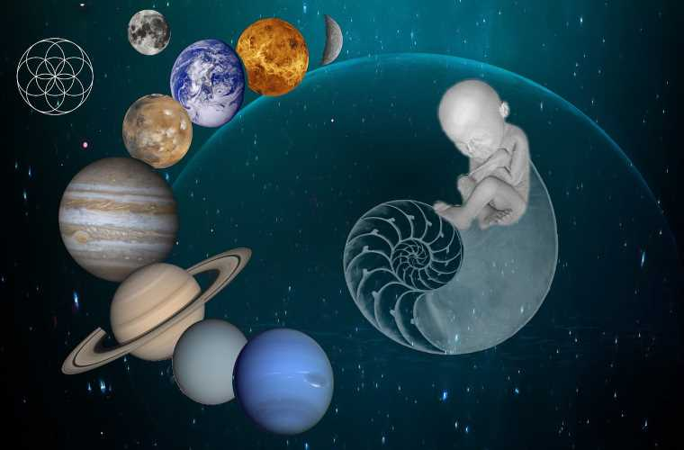
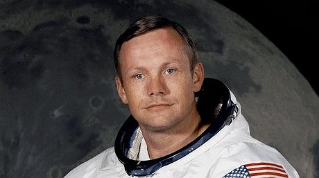

NOTRE UNIVERS, NOTRE
GALAXY, NOTRE SYSTÈME
SOLAIRE, NOTRE TERRE.
Tout d'abord, commençons par comprendre l'origine de
l'univers. Beaucoup d'astronomes et astrophysiciens postulent
la formation de l'univers par la théorie du Big Bang,
l'idéologie la plus supportée par des scientifiques...
Source: JWST
QUELQUES CONCEPTS
L'astronomie est l'étude de l'univers. Elle est la science ayant pour objet l'observation et l'étude des corps célestes dans leur position, leur mouvement et leur constitution. Voici quelques vidéos liées aux concepts de l'astronomie.
Big Bang
Le Big Bang est un modèle cosmologique employé par les scientifiques pour donner un aperçu de l'origine et l'évolution de l'Univers.
Trou noir
Un trou noir est un corp céleste si dense que l'intensité se son champ gravitationnel empêche toute forme de matière de s'en échapper.
Supernova
Un Supernova est l'ensemble des phénomènes qui résultent de l'implosion d'une étoile en fin de vie, notamment une éléphantesque explosion s'associant d'une augmentation brève mais incalculablement grande de sa luminosité.
Pulsars & Quasars
Un quasar est un trou noir supermassif au centre d'une région extrêmement lumineuse (noyau actif de galaxie). Un pulsar est un objet astronomique produisant un signal périodique allant de l'ordre de la milliseconde à quelques dizaines de secondes.
Source: JWST
LES PHOTOS PITTORESQUES DU JWST
Le James Webb Space Telescope est le plus grand télescope optique
de l'espace et effectue actuellement de l'astronomie infrarouge.
À la gauche apparait sa première image des galaxies lointaines au
bord
de l'Univers observable, balayées de nous par l'expansion de
l'Univers.
Cliquez sur le bouton ci-dessous et admirez la magnificence de
ces images.
Mystères de l'Univers
Quelles sont ces questions brûlantes sur le cosmos qui
déconcertent encore les astronomes aujourd'hui? Pour enquêter sur
certains des plus grands mystères de la science, vous devez vous
aventurer dans des endroits assez éloignés : le fond des océans,
l'intérieur du cerveau humain, le sommet des montagnes et même la
fin des temps.
Cliquez sur l'une de ces images pour en savoir plus.
Matière noire

En ce qui concerne le fait le plus étonnant dont nous ne savons rien, il y a la matière noire et l'énergie noire. Nous ne savons pas ce que l'un d'eux est. Tout ce que nous savons et aimons sur l'univers et toutes les lois de la physique telles qu'elles s'appliquent s'appliquent à quatre pour cent de l'univers. C'est époustouflant.
Multivers

La pensée moderne est que le temps n'a pas commencé avec le big bang et qu'il y avait un multivers même avant le big bang. Dans la théorie de l'inflation et dans la théorie des cordes, il y avait des univers avant notre big bang, et ces big bangs se produisent tout le temps. Les univers se forment lorsque des bulles entrent en collision ou se fissionnent en bulles plus petites.
Vie Extraterrestre

On me demande souvent : "Croyez-vous qu'il existe une intelligence extraterrestre ?" Je donne les arguments standards - il y a beaucoup d'endroits là-bas, les molécules de la vie sont partout, j'utilise le mot milliards, etc. Ensuite, je dis que ce serait étonnant pour moi s'il n'y avait pas d'intelligence extraterrestre, mais bien sûr, il n'y a encore aucune preuve convaincante pour cela.
Avant le Big Bang?
Le temps lui-même doit s'arrêter. Vous ne pouvez pas arriver à un moment avant le big bang, car il n'y avait pas de temps avant le big bang. Nous avons finalement trouvé quelque chose qui n'a pas de cause parce qu'il n'y avait pas de temps pour qu'une cause existe.
Origine de la vie

Il y a de la grandeur dans cette vision de la vie, avec ses multiples pouvoirs, ayant été à l'origine insufflés dans quelques formes ou dans une seule ; et que, tandis que cette planète a continué à faire des cycles selon la loi fixe de la gravité, à partir d'un si simple commencement, les formes les plus belles et les plus merveilleuses ont été et sont en train d'évoluer.
Galeries
Visitons à présent quelques scientifiques qui ont contribués à l'évolution de notre comprehension du Cosmos.


{kind=link}
{kind=link}
{kind=link}
{kind=link}
{kind=link}
{kind=link}
{kind=link}
{kind=link}
{kind=link}
{kind=link}
{kind=link}
Vous trouverez aussi...
Les premiers pas sur la lune.
Source: NTD
Apollo 11 est une mission du programme spatial américain Apollo au cours de
laquelle, pour la première fois, des hommes se sont posés sur la Lune, le
lundi 21 juillet 1969. L'agence spatiale américaine, la NASA, remplit ainsi
le désir fixé par le président John F. Kennedy en 1961 de poser un équipage
sur la Lune avant la fin de la décennie 1960. Il s'agissait de démontrer la
supériorité des États-Unis sur l'Union soviétique qui avait été mise à mal
par les succès soviétiques au début de l'ère spatiale dans le contexte de la
guerre froide qui oppose alors ces deux pays. Ce défi est lancé alors que la
NASA n'a pas encore placé en orbite un seul astronaute. Grâce à une
mobilisation de moyens humains et financiers considérables, l'agence
spatiale rattrape puis dépasse le programme spatial soviétique.
Source: Wikipédia

C'est un petit pas pour l'homme mais un bond de géant pour l'humanité.
Contactez-nous
Rejoignez-nous alors que nous percevons les mystères de l'univers.